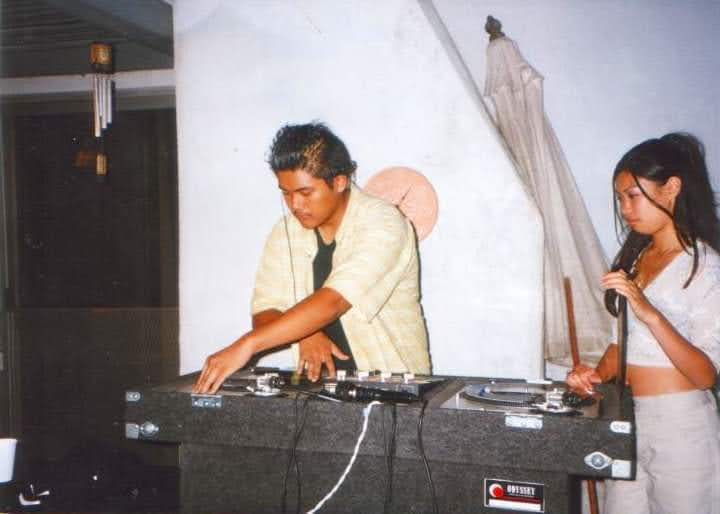

Hip hop to country, 70s to today — one DJ who reads any room and keeps it moving.
Open format means no lane. Whatever the room calls for, it's in the crate.
Since touching his first turntable and mixer in 1996, DJ U-Sho has been obsessed with one thing: reading a crowd and moving a dance floor. He spent those early years immersed in the Inland Empire hip hop scene — promoting and throwing events with a local crew, learning what makes a crowd move from the floor up — while honing his craft on actual vinyl. By the early 2000s, he'd moved from promoting to the booth, building the open format skills that let him move from hip hop into classic rock into dancehall into Top 40 without ever losing the floor.
He moved to Las Vegas in 2000, where he spent years in the clubs, mentored by Las Vegas Strip DJs. He played clubs and lounges on and off the Strip — Risque at the Paris, Mist at TI, Rocks Lounge at Red Rock — while holding down residencies at Mickey Finnz on Fremont Street and Fundamentals at the Aloha Bar. He also picked up convention bookings during this stretch, bringing his sets to the city's biggest trade shows and expos.
Back in Southern California from 2007 to 2017, he played rooms across LA, Orange County, and the Inland Empire, while holding a residency at Flyball LA — "a party uniquely LA." Alongside the club scene, he picked up corporate and brand events, including events for Lululemon Orange County, showing the same skill set worked just as well outside the nightclub. When the world went quiet during the pandemic, he kept the music going on Twitch, streaming sets to a crowd that couldn't gather in person.
Now based in Franklin County in the St Louis metro area, DJ U-Sho still plays the same role he always has: the DJ who can walk into a wedding, a corporate event, a bar, or a private party and read exactly what the night calls for. Locally, that's meant private events leaning into classic rock and country — proof that an open format DJ can move just as easily through a Midwest crowd as a Vegas nightclub — and he's available to do it for yours.
Started DJing, learning the craft on turntables and cutting his teeth in the local party scene.
Started DJing bars, clubs, and special events on and off the Strip.
Moved back to California, playing venues across the LA, Orange County, and Inland Empire scene.
Kept the sets going through the pandemic, livestreaming to a crowd that couldn't gather in person.
Based in Franklin County, St Louis Metro area and available for private events near and far.
Olympia Convention · Las Vegas, NV
Magic Convention · Las Vegas, NV
Corporate Event · Austin, TX
Corporate Event · St George, UT

The Beginning · 1996
Fly Ball LA · Los Angeles, CA
Myst Lounge · Las Vegas, NV
The Bungalow · Huntington Beach, CA
Lululemon Event · Costa Mesa, CA
Olympia Convention · Las Vegas, NV
Magic Convention · Las Vegas, NV
Corporate Event · Austin, TX
Corporate Event · St George, UT
The Beginning · 1996
Fly Ball LA · Los Angeles, CA
Myst Lounge · Las Vegas, NV
The Bungalow · Huntington Beach, CA
Lululemon Event · Costa Mesa, CA
Weddings, corporate events, clubs, and private parties — DJ U-Sho brings thirty years of reading a room to yours.
Book DJ U-Sho